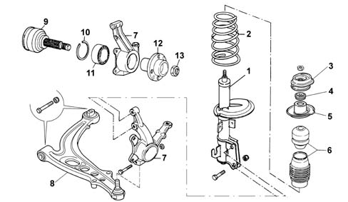

Introduction - FRONT SUSPENSION
- Path
- Descriptions > 44 SUSPENSION AND WHEELS > 4410 FRONT SUSPENSION > Introduction - FRONT SUSPENSION
- Kind
- system description
- Applies to
- all engines; all production periods
- Interactive page
- https://sloeber94.github.io/elrnDB-lYpsln/en/#/2429852
Applies to: all engines; all production periods
Front suspension: independent, McPherson type.
The front suspension crossmember made from galvanized steel to improve resistance to structural corrosion has been strengthened with box sections at the bodyshell attachments to guarantee improved passenger compartment noise filtration.
The cast iron track control arms, have new bushes fitted at the rear of the vertical axle to improve the absorption of vibrations and road holding round bends.
Side load type coil spring to reduce tangential forces on the shock absorber stem with a consequent improvement in the absorption of small irregularities in the road surface.
Double acting telescopic hydraulic shock absorbers.
Upper shock absorber mounting with improved axial rigidity to improve comfort.
Steering knuckle with increased transverse camber angle to improve the camber angle when cornering (wheel perpendicular to the ground).
Axial bearing.
Cap secured to the bodyshell turret.
Front suspension with anti-roll bar.

1 - Shock absorber 2 - Coil spring 3 - Upper shock absorber shim 4 - Bearing spacer 5 - Rubber spring upper support seal 6 - Dust cover and end of travel buffer 7 - Steering knuckle 8 - Track control arm 9 - Constant velocity joint with stub axle 10 - Bearing circlip 11- Ball bearing 12 - Wheel hub 13 - Wheel hub fixing nut